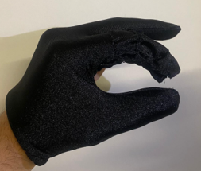
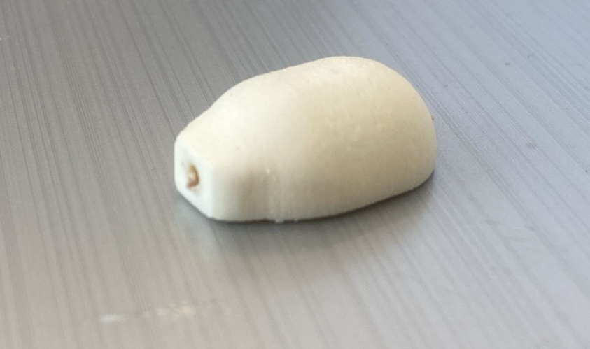
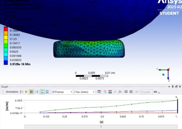
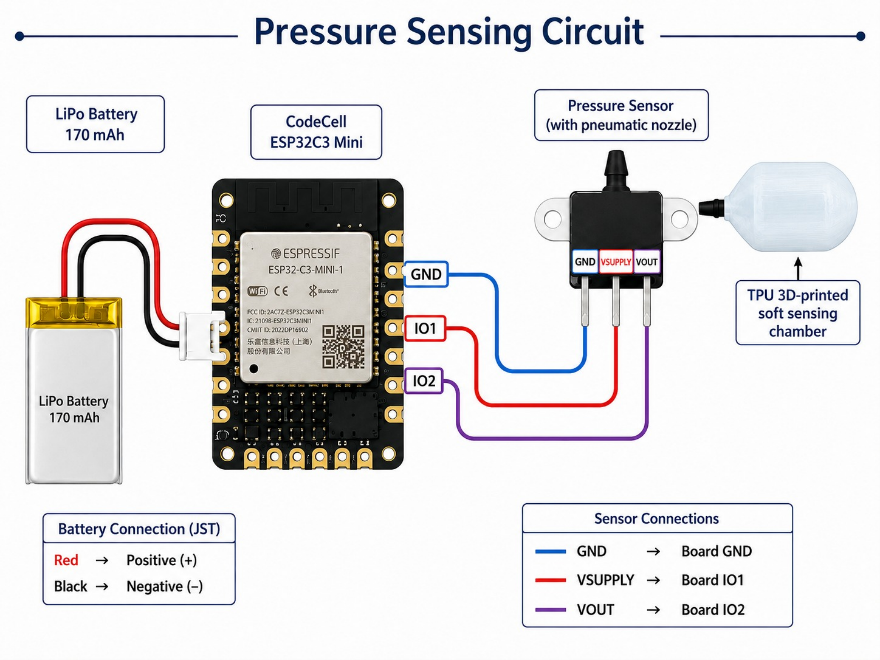
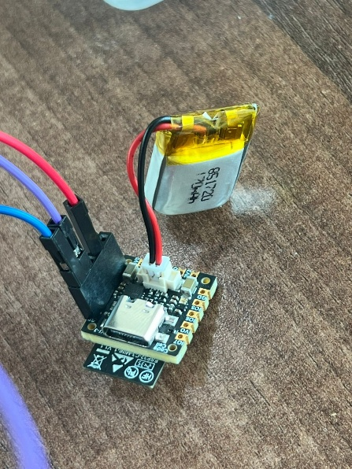
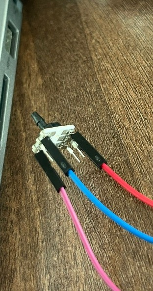
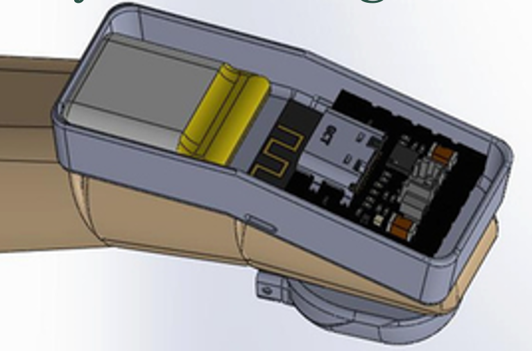

Soft chamber
A flexible 3D-printed pneumatic element forms the sensing interface.
UNDERGRADUATE RESEARCH · 2024–2026
Development of a wearable soft robotic sensing platform for grasp rehabilitation. The project combines a 3D-printed pneumatic chamber, pressure sensing, embedded electronics, wireless data transmission, and a Unity-based augmented reality feedback interface.

PHYSICAL PROTOTYPE
The glove prototype is the physical platform for exploring wearable grasp-pressure sensing. The following sections document the chamber design, fabrication, simulation, electronics, and system integration.
REAL PROTOTYPEThe system combines a soft pneumatic sensing chamber with a pressure sensor and an ESP32-C3-based embedded platform. Pressure measurements are intended to be transmitted wirelessly to a Unity-based interface for visual grasp-pressure feedback.

A flexible 3D-printed pneumatic element forms the sensing interface.
A pressure sensor converts pneumatic pressure into an electrical signal.
The embedded platform acquires sensor data and supports wireless transmission.
A visual interface represents grasp pressure through a graded indicator.
The pneumatic chamber was developed through CAD iterations to refine its geometry and support fabrication and integration with the pressure sensor. The design process connects the digital model to the physical sensing component.

The CAD model defines the chamber geometry and provides the basis for mechanical analysis, fabrication, and hardware integration.
Iterative design is important when developing flexible pneumatic components because geometry, material behavior, sealing, and manufacturability all influence the final assembly.

The chamber was fabricated as a physical component for the pressure-sensing system. This stage connects the digital geometry with the real mechanical element used during prototype development.
Fabrication and testing help identify practical considerations such as pneumatic connections, sealing, flexibility, and compatibility with the pressure sensor.
ANSYS simulations were used during the mechanical analysis of the sensing chamber. The following images document the simulation model and the associated result visualization.

The simulation workflow supports investigation of the chamber's mechanical response under the modeled loading conditions.
Numerical conclusions should be reported alongside the corresponding material properties, boundary conditions, and validation method.

The result visualization provides a record of the simulated mechanical interaction with the chamber.
Specific conclusions about stress, strain, deformation, or performance should be added only after confirming the plotted variable and simulation settings.
The embedded subsystem integrates the pressure sensor, ESP32-C3 Mini development board, and battery-powered electronics. The circuit and prototype photographs document both the intended connections and the physical hardware assembly.

The diagram documents the connections between the pressure sensor, microcontroller, and power supply.
It serves as the reference for understanding the embedded sensing architecture and the relationship between the individual components.

The photograph shows the embedded board and battery in the physical prototype. This hardware forms part of the wearable sensing electronics.
The compact arrangement supports development toward a wearable implementation.

The wiring photograph documents the physical connections used in the sensor assembly. These connections link the sensing component to the embedded electronics.
Clear wiring documentation helps communicate the prototype's implementation and supports troubleshooting and repeatable assembly.

The enclosure CAD model shows the arrangement of the electronics within a compact package. This design stage addresses how the electronic components can be housed and integrated with the wearable prototype.
Mechanical packaging is an important part of the transition from a bench prototype to a wearable engineering system.
The intended feedback interface translates grasp pressure into a visual indicator, helping users distinguish between pressure levels during a rehabilitation task.
The system overview illustrates the concept of this feedback workflow. The detailed Unity interface and its implementation should be documented with the corresponding application screenshots and test evidence.
A graded indicator communicates the relative level of grasp pressure.
The embedded platform supports wireless transfer of pressure measurements.
Unity provides the visual environment for pressure-related feedback.
My contribution spanned the engineering workflow, including CAD development, fabrication, simulation, sensor integration, embedded electronics, and system-level development for augmented reality feedback.
This multidisciplinary work brought together mechanical design, embedded systems, and human-centered rehabilitation technology.
Chamber design, CAD iterations, fabrication, and mechanical analysis.
Pressure sensing, circuit integration, battery-powered electronics, and wireless data.
Integration of sensing, data transmission, and the intended AR feedback workflow.
In preparation · 2026